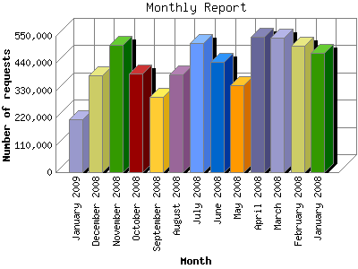

The Monthly Report identifies activity for each month in the report
time frame. Remember that each page hit can result in several server requests
as the images for each page are loaded.
Note: Depending on the
report time frame, the first and last months may not represent a complete
month's worth of data, resulting in lower hits.

| Month | Number of requests | Number of page requests | |
|---|---|---|---|
| 1. | January 2008 | 480,913 | 3,737 |
| 2. | February 2008 | 509,370 | 4,026 |
| 3. | March 2008 | 544,005 | 4,297 |
| 4. | April 2008 | 546,215 | 4,253 |
| 5. | May 2008 | 351,275 | 2,970 |
| 6. | June 2008 | 444,466 | 3,799 |
| 7. | July 2008 | 521,000 | 4,414 |
| 8. | August 2008 | 393,188 | 3,447 |
| 9. | September 2008 | 303,242 | 2,598 |
| 10. | October 2008 | 397,285 | 3,865 |
| 11. | November 2008 | 514,012 | 4,215 |
| 12. | December 2008 | 392,125 | 3,511 |
| 13. | January 2009 | 214,517 | 1,671 |
Most active month July 2008 : 4,414 pages sent. 546,215 requests handled.
Monthly average: 3,600 pages sent. 431,662 requests handled.
This report was generated on January 17, 2009 11:54.
Report time frame January 3, 2008 00:50 to January 16, 2009 23:34.
| Web statistics report produced by: analog 6.0 / Report Magic 2.21 |